Últimamente no he jugado tanto como lo hacía antes, pero de vez en cuando me doy el lujo de jugar videojuegos ya sea por recomendación o con amigos. Este año ha sido un año de buenos y malos videojuegos y a día de hoy seguramente muchos de ustedes estén al tanto del lanzamiento de GTA VI tanto como yo. Mientras tanto, les daré una lista de cinco videojuegos que no necesariamente son lanzamientos recientes pero que disfruté en su momento.
#5 Ghost of Tsushima
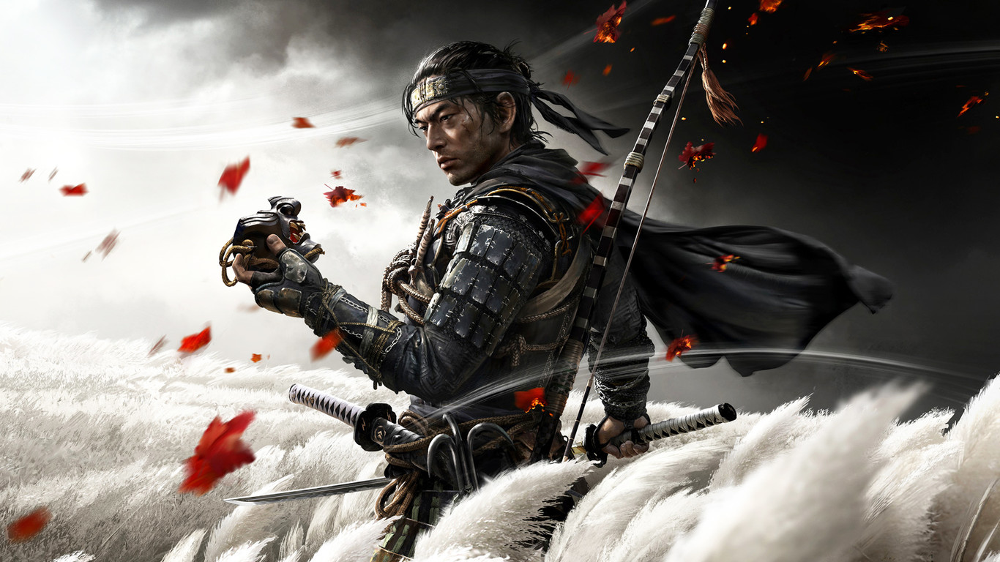
Si existiera un videojuego hecho poesía, sería este. Un homenaje a la cultura japonesa, con gráficos, historia y jugabilidad increíbles. Cuando jugué este juego me detuve muchas veces solamente a observar los paisajes o revisar detalles tan ínfimos como las plantas interactuando con el viento. Cualquier apasionado por el arte 3D queda fascinado con las físicas del juego.
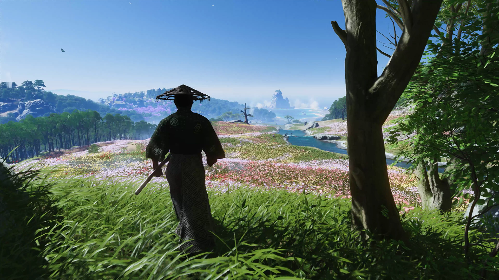
Y la historia 10/10, no quiero hacer spoilers pero si te gusta jugar por la historia, vale la pena echarle un vistazo. Jin Sakai es un personaje excepcional que tiene que decidir si muere con honor o si rompe su código (Bushidō) para derrotar a los invasores mongoles. Me parece que el juego tiene una expansión que agrega algunas misiones.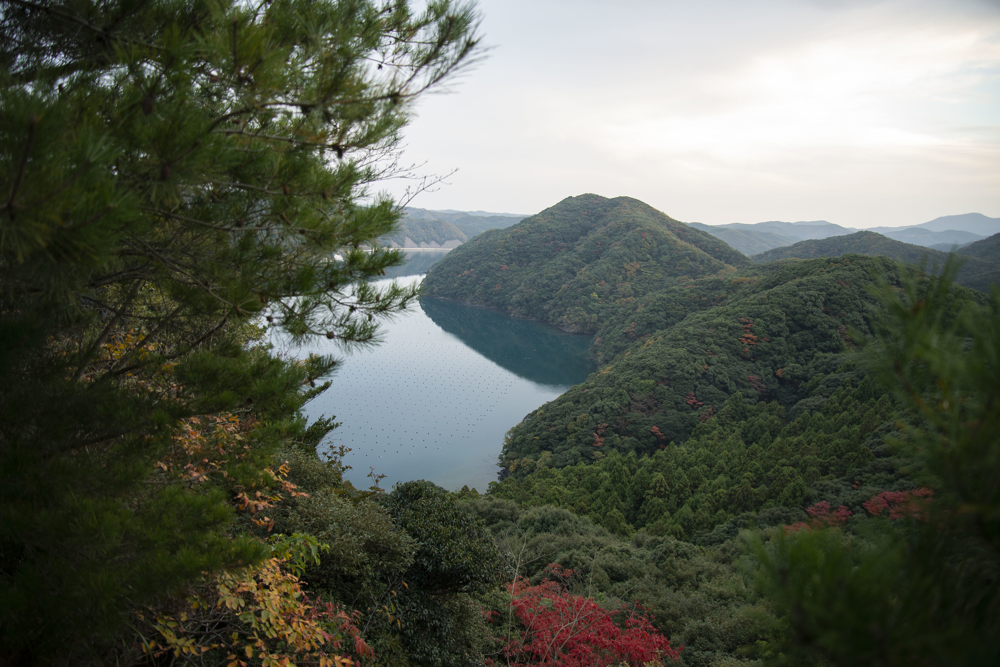
Investigando un poco en su momento, descubrí que Tsushima era una isla real situada entre Japón y Corea del sur. No estoy seguro de que la historia este basada en hechos reales pero algo que si sé es que se siente como un viaje brutalmente personal. Es un juego atemporal.#4 Dispatch
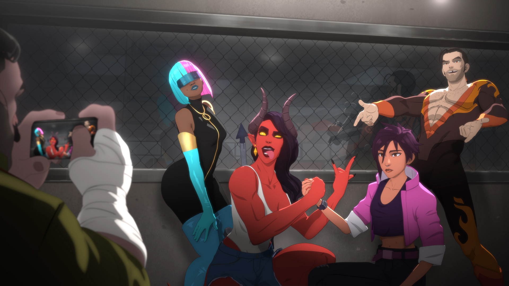
Dispatch es de esos juegos de los que no sabes que esperar y al jugarlos te das cuenta que son una obra maestra. Si ves imágenes creeras que se trata de una serie o película y eso es por que lo es. Dispatch es una serie compuesta por varios capítulos en los que debes tomar decisiones que afectan al personaje principal y a otros personajes de la historia.
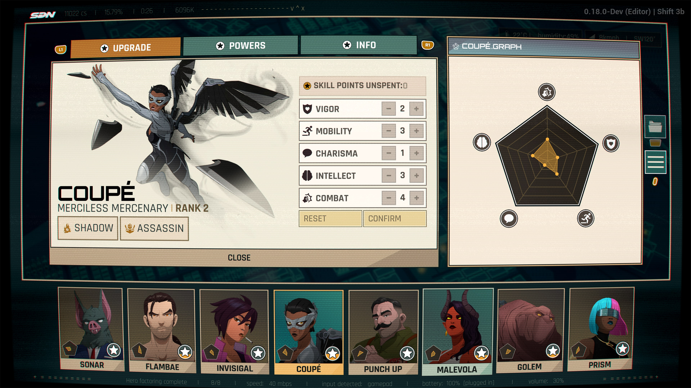
La historia es bastante cómica, subida de tono, tiene humor crudo y la calidad de animación es increíble. Al principio la asocié con la serie de Amazon: "Invincible" pero esta historia es un poco más relajada. Es muy inmersiva por lo que al concluir el juego sentirás que quieres repetir la historia pero ahora tomando decisiones distintas. El juego no está compuesto solo por cinemáticas, hay algunos módulos del juego en donde deberás hacer tu trabajo de "despachador" que es sobre lo que trata el videojuego.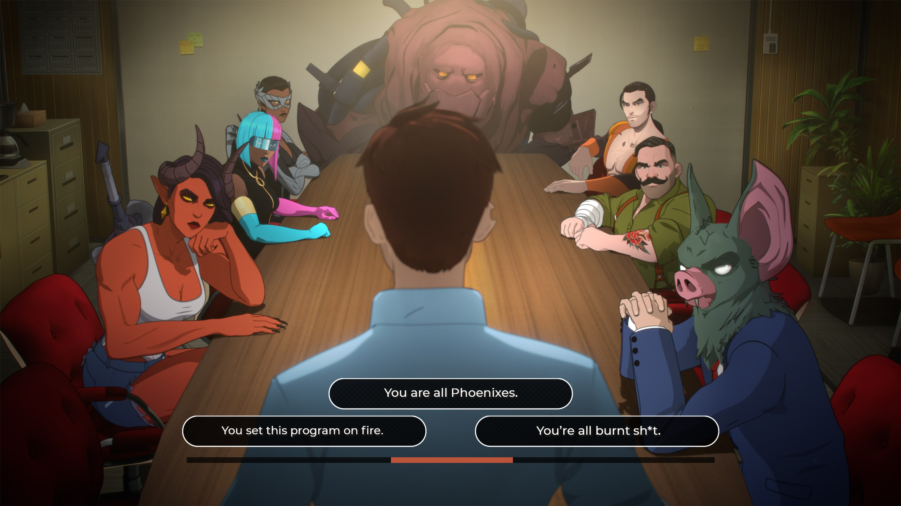
Recomendado si te gustan los juegos relax.#3 Palworld
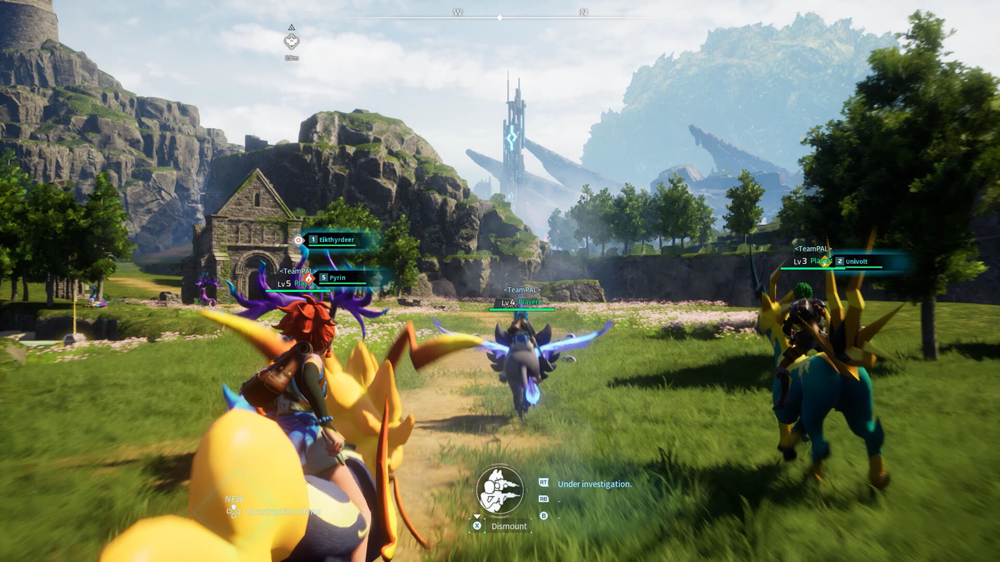
Cuando este juego apareció por primera vez hace ya algún tiempo, creí que era IA porque nadie esperaba una imitación de Pokemon con armas y construcción de bases. En su momento lo vi como un proyecto vende humo pero decidí jugarlo y la verdad me dejó sorprendido. Es una mezcla extraña, una vez que lo juegas empiezas a ver similitudes con juegos de supervivencia como Rust o Ark, solo que aquí puedes capturar especies conocidas como "Pals" que son prácticamente una copia de los Pokemon (si comparas algunos de ellos lo sabrás).
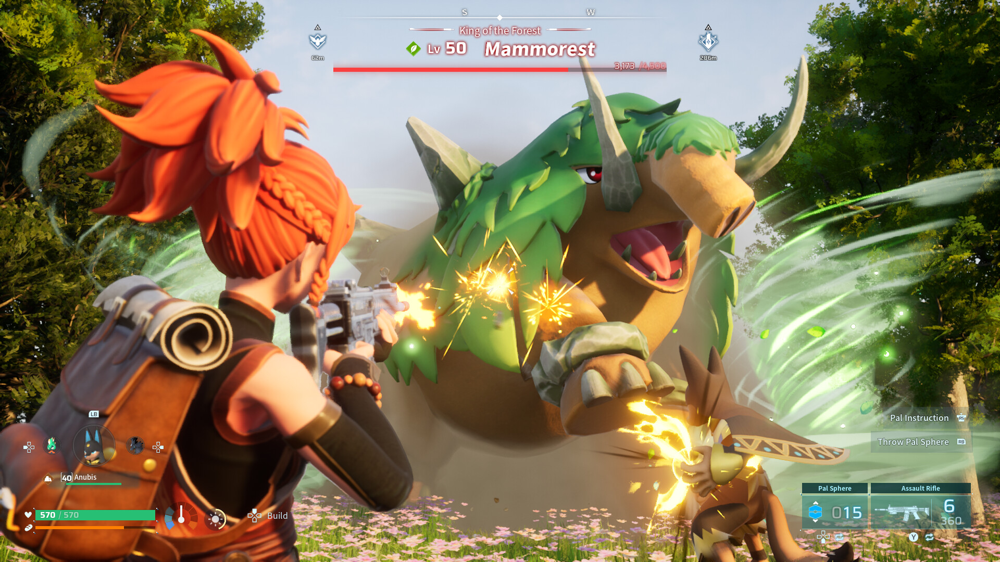
Es un poco denso el hecho de que los Pals capturados literalmente son esclavizados y van a cubrir tareas para sostener la base o atacar a enemigos en todo el mapa. Hay una historia principal pero con todas las tareas secundarias seguro pasarás horas constuyendo una base o looteando recursos descubriendo lugares y nuevos Pals.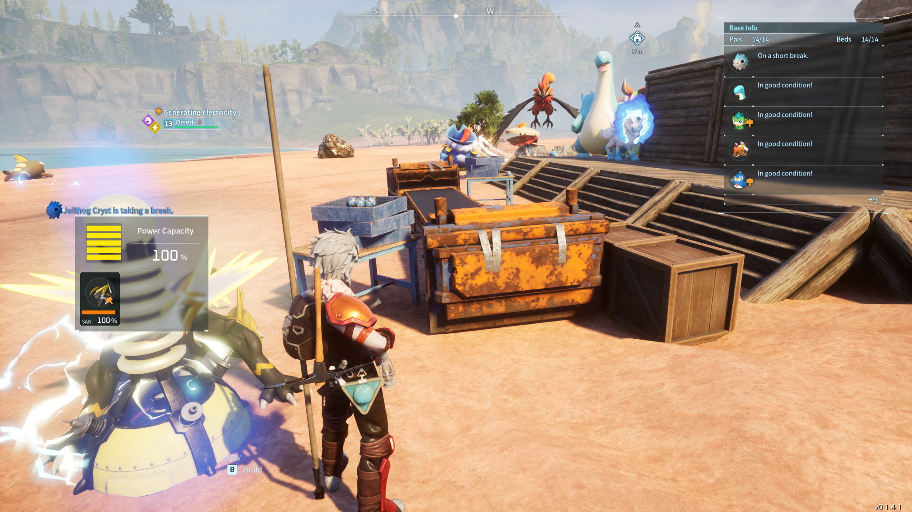
Puede tornarse repetitivo después de un rato y este juego es recomendado jugarlo con amigos. Creo que en cuanto a mecánicas y jugabilidad es todo lo que los fans de Pokemon buscábamos en una entrega actual y creo que por eso Palworld ha logrado ser tan éxitoso.#2 Kingdom Come Deliverance 2
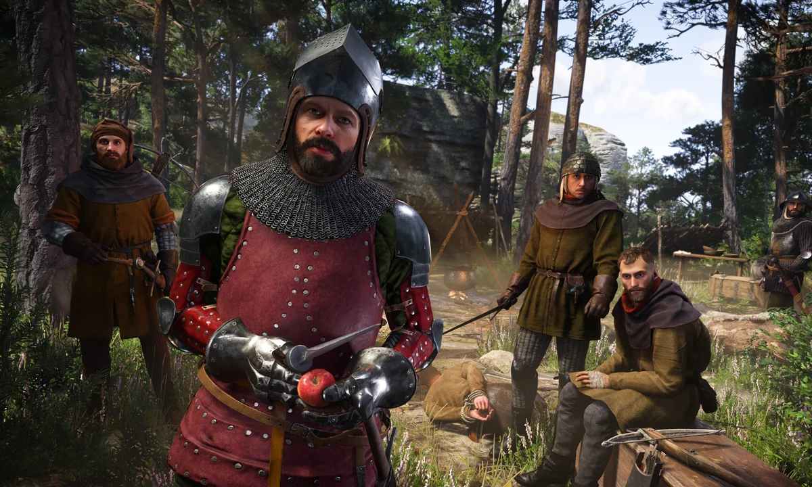
Disfruto mucho los juegos medievales. Kingdom Come podría ser el ápice hoy por hoy de la experiencia más inmersiva en este contexto, si no es que otros juegos como Mount & Blade o Manor Lords, también lo hacen. Es importante aclarar que este videojuego tiene dos entregas, jugué la primera pero no captó tanto mi atención como la segunda y más reciente entrega. Eso no quiere decir que la primera parte haya sido mala, de hecho me gusta su historia, pero esta versión mejora bastante el sistema de combate y presenta nuevos avances en el apartado gráfico.
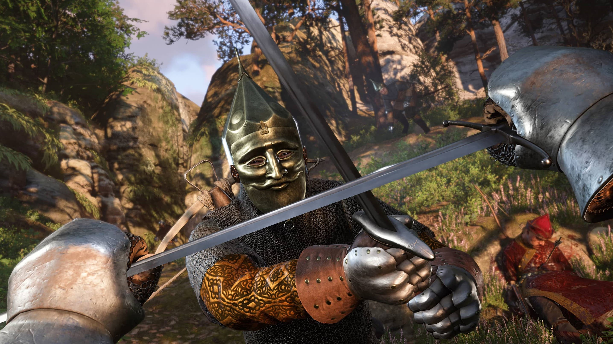
La historia del juego es sencilla, eres niñero de un noble, tienen una misión, todo se complica y terminas herido, lastimado y relegado. A lo largo de la historia, tu misión será recuperar tu honor y tu reputación colaborando con las personas que andan dispersas por el mapa.Claramente al ser un juego que profundiza en la experiencia de ser un ciudadano en la edad media, hay algunas cosas sobre las que no podrás excederte, como querer enfrentar a varios bandidos a la vez, o tomar cosas robadas sin tener consecuencias. El mundo de Kingdom Come Deliverance te va a sorprender y de paso te va a dar algún par de lecciones que otros juegos no te darían.
#1 GTA VI
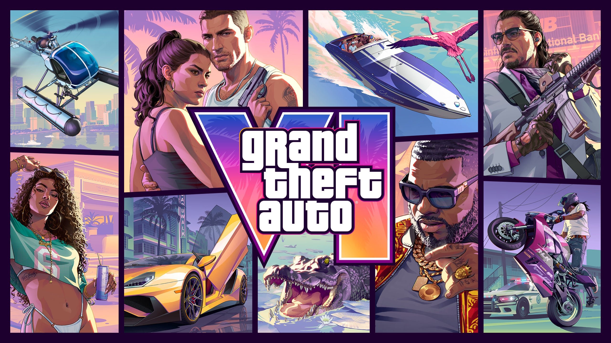
Me atrevo a decir que este es el juego más esperado de la historia. No es un secreto que Rockstar Games ha
sido uno de los estudios más importantes en la industria de los videojuegos y que sus entregas han marcado un
antes y un después en la historia de los videojuegos. GTA VI no es la excepción, y aunque todavía no ha sido
lanzado, la expectativa es enorme así que no podía dejar de mencionarlo en esta lista.
Nisiquiera podré jugarlo en su lanzamiento, pero estoy seguro que será un juego recordardo por muchos años. No
olvidemos que rockstar games lanzó Red Dead Redemption 2 en 2018 y todavía hoy es considerado uno de los
mejores videojuegos de la historia.
Tengo envidia por aquellos que tienen play station y xbox y podrán jugarlo en su lanzamiento, pero estoy
seguro que
valdrá la pena esperar un poco más para poder
disfrutarlo en PC.